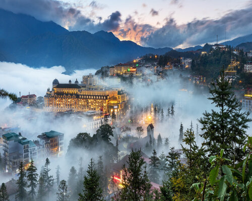

Sapa - Vùng đất huyền bí của dãy núi Hoàng Liên
Chào mừng các bạn đến với bài viết hôm nay, nơi chúng ta sẽ bắt đầu một cuộc phiêu lưu đến vùng đất tuyệt vời nằm ẩn mình giữa những ngọn núi cao của Việt Nam - Sapa. Sapa, thuộc tỉnh Lào Cai, là một điểm đến không thể bỏ lỡ đối với những người yêu thiên nhiên và mong muốn tận hưởng không khí trong lành của núi rừng Tây Bắc. Nằm ở độ cao hơn 1,500 mét so với mực nước biển, Sapa không chỉ nổi tiếng với khí hậu mát mẻ quanh năm mà còn với những cảnh đẹp hùng vĩ và động dơ của núi rừng xanh ngắt.
Một trong những điểm đặc sắc nhất của Sapa chính là những thửa ruộng bậc thang lớn mênh mông, tạo nên bức tranh nghệ thuật tự nhiên độc đáo. Cảnh đẹp này không chỉ làm cho người ta kinh ngạc trước sự khéo léo của người dân bản địa mà còn mở ra những cơ hội tuyệt vời cho những chuyến trekking và thám hiểm đầy thú vị. Sapa không chỉ rực rỡ trong mùa lúa chín vàng mà còn khiến du khách say đắm bởi vẻ đẹp hoang sơ và tinh khôi của những thác nước hùng vĩ như Thác Bạc và Thác Cát Cát. Các bản làng dân dụ nằm giữa núi rừng còn giữ lại nét văn hóa truyền thống của các dân tộc thiểu số, tạo nên một bức tranh đa dạng về văn hóa và địa lý. Sapa không chỉ là điểm đến của những người muốn thư giãn giữa không gian yên bình mà còn là điểm đến của những tâm hồn phiêu lưu, muốn đối mặt với thách thức và khám phá những điều mới lạ. Hãy đặt chân đến Sapa để cảm nhận sự giao thoa hài hòa giữa con người và thiên nhiên, nơi mà mỗi góc nhìn đều là một bài thơ tuyệt vời của đất trời Việt Nam.